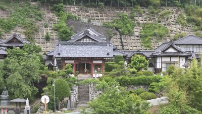

〜五百年の歴史と、未来へつなぐ祈り〜
南相木村・峰雄山常源寺の開基と伝承、歴史と祈りを巡るデジタルアーカイブ

「歴史から学ぶ常源寺 〜五百年の歴史と、未来へつなぐ祈り〜」へようこそ。
当デジタルアーカイブは、天文十九年（1550年）に領主・相木市兵衛常喜公によって創建され、開山・節香徳忠禅師を招いて以来、四百九十年・五百年にわたり南相木村の地で人々の先祖供養と平安を支え続けてきた「峰雄山常源寺」の歴史と文化を伝えるために開設いたしました。
武田信玄公の信州先方衆として勇名をはせた相木氏の足跡、歴代住職の教え、七堂伽藍や本尊・釈迦牟ニ仏をはじめとする寺宝・仏像の記録、そして地域に伝わる寛保二年の「戌の満水」供養の歴史などを、解説音声と映像（YouTube）でお楽しみいただけます。
遠く離れて暮らすご親族や故郷を想う皆様が、いつでも当サイトを通じて、常源寺の深き歴史と先人たちの志、そして心の拠り所としてのつながりを感じていただけることを願っています。
このサイトが、歴史を学び、感謝の心を深め、次の世代へ「未来への祈り」を受け継ぐ広場として末永く親しまれることを祈念いたします。
Historical Commentary / 歴史の解説メモ
🧩 体験型Webクイズ • 常源寺の歴史と文化を学べる30問
🎵 音声解説 • 天文19年創建と常喜公の歩み
🎵 音声解説 • 徳忠和尚の徳風と禅の心
🎵 音声解説 • お寺の配置と仏像の意味
🎵 音楽ファイル • 三百年の伝統とお祝いの曲
🎵 音声解説 • 尊像の由緒と文殊菩薩・愛染明王の教え
🎵 音声解説 • 参道・山門と仁王像
🎵 音声解説 • 常源寺創建以前の物語
🎵 音声解説 • 武士の足跡と南相木の風土
🎬 自然風景 • 四季のお便り映像